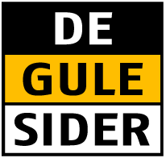

Milnersvej 8, 3400 Hillerød
Klik på logo eller scan QR kode for at benytte Krak's kort for at finde vej.

Klik på logo for at benytte De Gule Sider's kort for at finde vej.
Klik på logo for at benytte Google's kort for at finde vej.